# 라운드 6 — 2026-10-22 12:42 평균 점수(C, 1~5, Claude 채점): **– (채점 없음)** · 자동 점수 3.03 · 그림 면적 평균 37% · 비용 $0 · 얼굴 잘림 0 | 유형 | 평균 | A 나음 | C 나음 | 같음 | |---|---|---|---|---| | 사진 | – | 0 | 0 | 0 | | 누끼 | – | 0 | 0 | 0 | | 오브젝트·일러스트 | – | 0 | 0 | 0 | AI 상자 결과: rule 36 · shrink 38 · free 28 · ok 6 · grow 12 ## 문제 집계 ## 케이스별 큰 문제 - **t1014-hanssem**(사진) : - **hr-doctor**(사진) : - **midas-team-photo**(사진) : - **t1014-asan-photo**(사진) : - **midas-cablebridge**(사진) : - **t1014-dongsuh**(누끼) : - **t1014-jeil**(누끼) : - **t1014-bionote-dog**(누끼) : - **abl-group**(누끼) : - **midas-folder-blue**(누끼) : - **t1014-gs2025**(오브젝트·일러스트) : - **t1014-lt-v2**(오브젝트·일러스트) : - **midas-faces-3d**(오브젝트·일러스트) : - **pin-15**(오브젝트·일러스트) : - **t1014-asan-illust**(오브젝트·일러스트) :
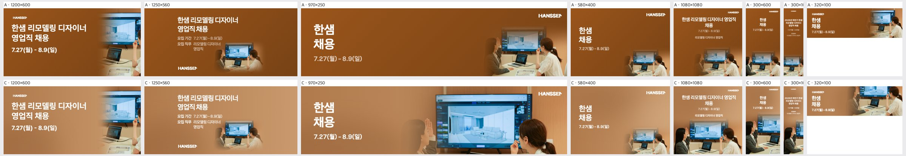
| 규격 | 점수 | 비중 | 크롭 | 배경 | 글자 | 메모 | AI 상자 | 그림 면적·주인공·채움·겹침 |
|---|---|---|---|---|---|---|---|---|
| 1200×600 | – | rule | 15% · 29% · 42% · 0% | |||||
| 1250×560 | – | rule | 9% · 15% · 27% · 0% | |||||
| 970×250 | – | shrink | 64% · 58% · 65% · 0% | |||||
| 580×400 | – | rule | 5% · 19% · 25% · 0% | |||||
| 1080×1080 | – | shrink | 54% · 31% · 45% · 0% | |||||
| 300×600 | – | shrink | 64% · 43% · 49% · 0% | |||||
| 300×1050 | – | free | 55% · 33% · 48% · 0% | |||||
| 320×100 | – | free | 62% · 33% · 43% · 0% |
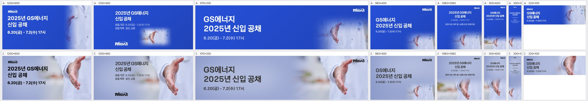
| 규격 | 점수 | 비중 | 크롭 | 배경 | 글자 | 메모 | AI 상자 | 그림 면적·주인공·채움·겹침 |
|---|---|---|---|---|---|---|---|---|
| 1200×600 | – | shrink | 66% · 34% · 50% · 0% | |||||
| 1250×560 | – | shrink | 66% · 41% · 52% · 0.4% | |||||
| 970×250 | – | shrink | 46% · 23% · 39% · 0% | |||||
| 580×400 | – | rule | 6% · 16% · 32% · 0% | |||||
| 1080×1080 | – | shrink | 52% · 27% · 47% · 0.8% | |||||
| 300×600 | – | shrink | 53% · 39% · 52% · 0% | |||||
| 300×1050 | – | rule | 17% · 35% · 51% · 0% | |||||
| 320×100 | – | free | 53% · 44% · 60% · 0% |
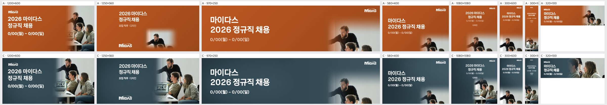
| 규격 | 점수 | 비중 | 크롭 | 배경 | 글자 | 메모 | AI 상자 | 그림 면적·주인공·채움·겹침 |
|---|---|---|---|---|---|---|---|---|
| 1200×600 | – | shrink | 47% · 18% · 34% · 0% | |||||
| 1250×560 | – | shrink | 47% · 20% · 29% · 0% | |||||
| 970×250 | – | rule | 6% · 26% · 41% · 0% | |||||
| 580×400 | – | rule | 4% · 21% · 36% · 0% | |||||
| 1080×1080 | – | shrink | 34% · 16% · 27% · 0% | |||||
| 300×600 | – | rule | 19% · 42% · 54% · 0% | |||||
| 300×1050 | – | shrink | 45% · 16% · 25% · 0% | |||||
| 320×100 | – | free | 60% · 60% · 77% · 0% |
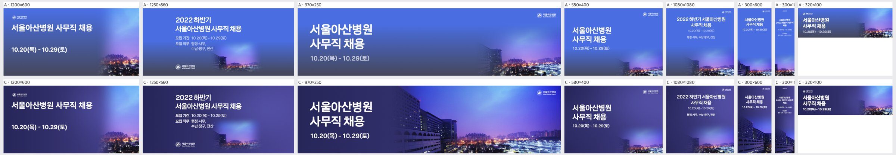
| 규격 | 점수 | 비중 | 크롭 | 배경 | 글자 | 메모 | AI 상자 | 그림 면적·주인공·채움·겹침 |
|---|---|---|---|---|---|---|---|---|
| 1200×600 | – | rule | 15% · 31% · 45% · 0% | |||||
| 1250×560 | – | rule | 9% · 18% · 29% · 0% | |||||
| 970×250 | – | shrink | 66% · 25% · 39% · 0% | |||||
| 580×400 | – | rule | 4% · 21% · 36% · 0% | |||||
| 1080×1080 | – | rule | 7% · 32% · 49% · 0% | |||||
| 300×600 | – | ok | 60% · 60% · 73% · 0% | |||||
| 300×1050 | – | ok | 40% · 33% · 47% · 0% | |||||
| 320×100 | – | rule | 18% · 40% · 59% · 0% |
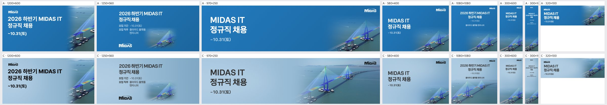
| 규격 | 점수 | 비중 | 크롭 | 배경 | 글자 | 메모 | AI 상자 | 그림 면적·주인공·채움·겹침 |
|---|---|---|---|---|---|---|---|---|
| 1200×600 | – | rule | 16% · 29% · 40% · 0% | |||||
| 1250×560 | – | rule | 9% · 15% · 26% · 0% | |||||
| 970×250 | – | shrink | 50% · 31% · 43% · 0% | |||||
| 580×400 | – | rule | 6% · 16% · 28% · 0% | |||||
| 1080×1080 | – | shrink | 60% · 31% · 46% · 0% | |||||
| 300×600 | – | rule | 21% · 35% · 45% · 0% | |||||
| 300×1050 | – | rule | 17% · 31% · 43% · 0% | |||||
| 320×100 | – | rule | 20% · 36% · 51% · 0% |
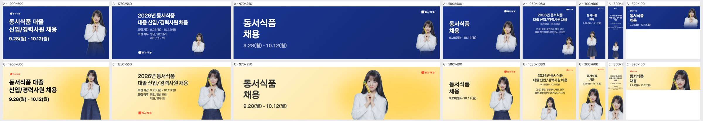
| 규격 | 점수 | 비중 | 크롭 | 배경 | 글자 | 메모 | AI 상자 | 그림 면적·주인공·채움·겹침 |
|---|---|---|---|---|---|---|---|---|
| 1200×600 | – | ok | 23% · 11% · 25% · 0% | |||||
| 1250×560 | – | free | 31% · 19% · 37% · 0% | |||||
| 970×250 | – | free | 67% · 19% · 27% · 0% | |||||
| 580×400 | – | free | 40% · 19% · 28% · 0% | |||||
| 1080×1080 | – | free | 45% · 13% · 37% · 0% | |||||
| 300×600 | – | free | 63% · 57% · 66% · 0% | |||||
| 300×1050 | – | shrink | 50% · 42% · 60% · 0% | |||||
| 320×100 | – | free | 58% · 16% · 28% · 0% |
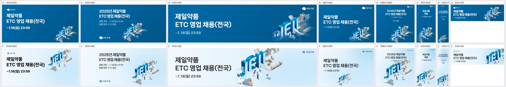
| 규격 | 점수 | 비중 | 크롭 | 배경 | 글자 | 메모 | AI 상자 | 그림 면적·주인공·채움·겹침 |
|---|---|---|---|---|---|---|---|---|
| 1200×600 | – | shrink | 39% · 20% · 36% · 1.9% | |||||
| 1250×560 | – | shrink | 39% · 22% · 37% · 0% | |||||
| 970×250 | – | grow | 70% · 33% · 49% · 0% | |||||
| 580×400 | – | free | 34% · 5% · 21% · 0% | |||||
| 1080×1080 | – | grow | 64% · 32% · 45% · 0% | |||||
| 300×600 | – | shrink | 44% · 15% · 23% · 0% | |||||
| 300×1050 | – | shrink | 34% · 21% · 32% · 0% | |||||
| 320×100 | – | shrink | 34% · 29% · 49% · 0% |
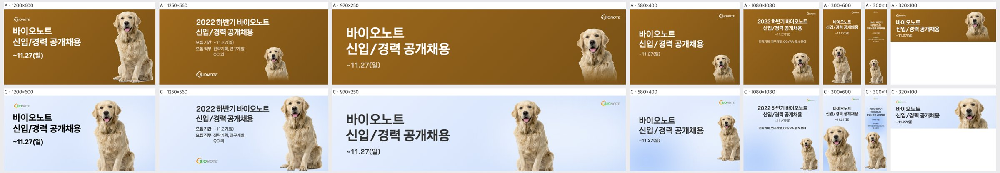
| 규격 | 점수 | 비중 | 크롭 | 배경 | 글자 | 메모 | AI 상자 | 그림 면적·주인공·채움·겹침 |
|---|---|---|---|---|---|---|---|---|
| 1200×600 | – | grow | 34% · 21% · 36% · 1.7% | |||||
| 1250×560 | – | free | 31% · 21% · 39% · 0% | |||||
| 970×250 | – | grow | 34% · 12% · 26% · 0% | |||||
| 580×400 | – | shrink | 19% · 13% · 29% · 0% | |||||
| 1080×1080 | – | free | 45% · 8% · 31% · 0% | |||||
| 300×600 | – | free | 63% · 39% · 51% · 0% | |||||
| 300×1050 | – | grow | 54% · 22% · 40% · 0% | |||||
| 320×100 | – | free | 43% · 13% · 33% · 0% |
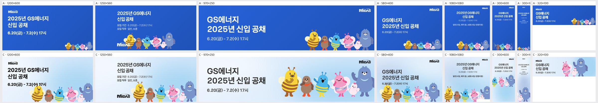
| 규격 | 점수 | 비중 | 크롭 | 배경 | 글자 | 메모 | AI 상자 | 그림 면적·주인공·채움·겹침 |
|---|---|---|---|---|---|---|---|---|
| 1200×600 | – | grow | 33% · 30% · 44% · 0% | |||||
| 1250×560 | – | grow | 37% · 30% · 41% · 0% | |||||
| 970×250 | – | free | 55% · 36% · 51% · 0% | |||||
| 580×400 | – | grow | 47% · 23% · 38% · 0% | |||||
| 1080×1080 | – | ok | 39% · 21% · 41% · 0% | |||||
| 300×600 | – | free | 63% · 27% · 40% · 0% | |||||
| 300×1050 | – | shrink | 36% · 25% · 40% · 0% | |||||
| 320×100 | – | free | 53% · 18% · 34% · 0% |
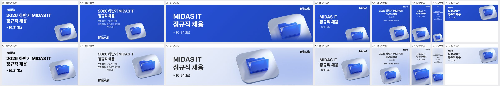
| 규격 | 점수 | 비중 | 크롭 | 배경 | 글자 | 메모 | AI 상자 | 그림 면적·주인공·채움·겹침 |
|---|---|---|---|---|---|---|---|---|
| 1200×600 | – | shrink | 30% · 21% · 32% · 1.2% | |||||
| 1250×560 | – | shrink | 30% · 23% · 35% · 1.7% | |||||
| 970×250 | – | grow | 50% · 27% · 39% · 0% | |||||
| 580×400 | – | grow | 44% · 33% · 44% · 0% | |||||
| 1080×1080 | – | free | 51% · 28% · 43% · 0% | |||||
| 300×600 | – | free | 63% · 26% · 36% · 0% | |||||
| 300×1050 | – | ok | 36% · 20% · 32% · 0% | |||||
| 320×100 | – | rule | 40% · 32% · 47% · 0% |
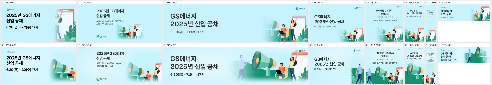
| 규격 | 점수 | 비중 | 크롭 | 배경 | 글자 | 메모 | AI 상자 | 그림 면적·주인공·채움·겹침 |
|---|---|---|---|---|---|---|---|---|
| 1200×600 | – | shrink | 37% · 26% · 43% · 0% | |||||
| 1250×560 | – | shrink | 43% · 26% · 37% · 0% | |||||
| 970×250 | – | shrink | 53% · 43% · 58% · 0% | |||||
| 580×400 | – | free | 22% · 7% · 22% · 0% | |||||
| 1080×1080 | – | grow | 60% · 45% · 65% · 0% | |||||
| 300×600 | – | free | 63% · 57% · 70% · 0% | |||||
| 300×1050 | – | grow | 38% · 38% · 53% · 0% | |||||
| 320×100 | – | free | 53% · 31% · 47% · 0% |
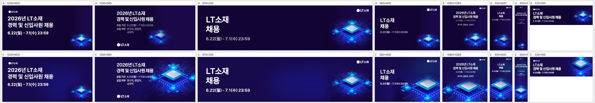
| 규격 | 점수 | 비중 | 크롭 | 배경 | 글자 | 메모 | AI 상자 | 그림 면적·주인공·채움·겹침 |
|---|---|---|---|---|---|---|---|---|
| 1200×600 | – | rule | 7% · 8% · 29% · 0% | |||||
| 1250×560 | – | shrink | 59% · 22% · 39% · 1.2% | |||||
| 970×250 | – | rule | 12% · 15% · 24% · 0% | |||||
| 580×400 | – | shrink | 48% · 21% · 30% · 0% | |||||
| 1080×1080 | – | shrink | 53% · 33% · 49% · 0% | |||||
| 300×600 | – | shrink | 60% · 40% · 48% · 0% | |||||
| 300×1050 | – | shrink | 42% · 23% · 36% · 0% | |||||
| 320×100 | – | free | 37% · 26% · 47% · 0% |
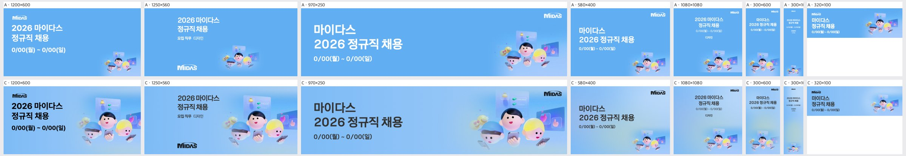
| 규격 | 점수 | 비중 | 크롭 | 배경 | 글자 | 메모 | AI 상자 | 그림 면적·주인공·채움·겹침 |
|---|---|---|---|---|---|---|---|---|
| 1200×600 | – | shrink | 48% · 21% · 36% · 0% | |||||
| 1250×560 | – | ok | 53% · 22% · 31% · 0% | |||||
| 970×250 | – | shrink | 39% · 18% · 32% · 0% | |||||
| 580×400 | – | rule | 6% · 8% · 22% · 0% | |||||
| 1080×1080 | – | rule | 9% · 11% · 22% · 0% | |||||
| 300×600 | – | rule | 0% · 19% · 31% · 0% | |||||
| 300×1050 | – | rule | 0% · 8% · 16% · 0% | |||||
| 320×100 | – | rule | 10% · 13% · 29% · 0% |
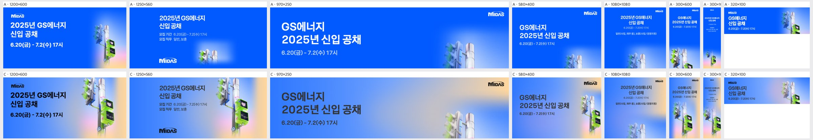
| 규격 | 점수 | 비중 | 크롭 | 배경 | 글자 | 메모 | AI 상자 | 그림 면적·주인공·채움·겹침 |
|---|---|---|---|---|---|---|---|---|
| 1200×600 | – | shrink | 38% · 25% · 42% · 0% | |||||
| 1250×560 | – | shrink | 38% · 25% · 37% · 0% | |||||
| 970×250 | – | rule | 5% · 19% · 34% · 0% | |||||
| 580×400 | – | free | 22% · 17% · 32% · 0% | |||||
| 1080×1080 | – | rule | 7% · 23% · 43% · 0% | |||||
| 300×600 | – | shrink | 63% · 43% · 56% · 0% | |||||
| 300×1050 | – | free | 57% · 35% · 51% · 0% | |||||
| 320×100 | – | rule | 18% · 38% · 54% · 0% |
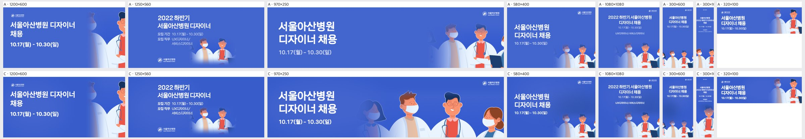
| 규격 | 점수 | 비중 | 크롭 | 배경 | 글자 | 메모 | AI 상자 | 그림 면적·주인공·채움·겹침 |
|---|---|---|---|---|---|---|---|---|
| 1200×600 | – | rule | 14% · 30% · 44% · 0% | |||||
| 1250×560 | – | rule | 9% · 16% · 27% · 0% | |||||
| 970×250 | – | free | 53% · 49% · 64% · 0% | |||||
| 580×400 | – | rule | 6% · 20% · 35% · 0% | |||||
| 1080×1080 | – | rule | 10% · 33% · 50% · 0% | |||||
| 300×600 | – | rule | 16% · 31% · 45% · 0% | |||||
| 300×1050 | – | free | 55% · 56% · 70% · 0% | |||||
| 320×100 | – | rule | 18% · 38% · 58% · 0% |